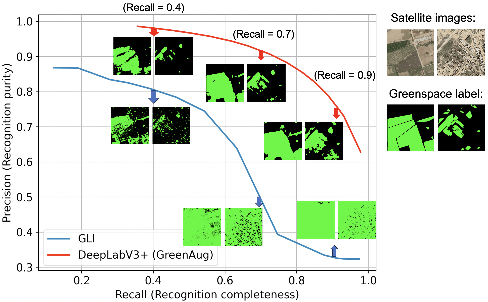
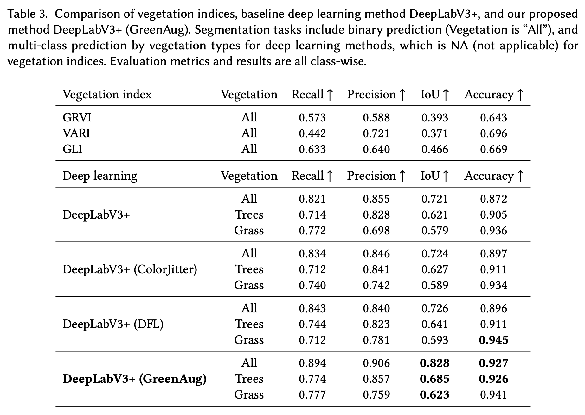

NYU Center for Health Data Science
Quantifying greenspace of Karachi City, Pakistan using high-resolution satellite image
Greenspaces in communities are critical for mitigating effects of climate change and have important impacts on our health. In Karachi city, Pakistan, we demonstrate a deep learning-based approach which includes green augmentation for measuring and delineating types of greenspace, with 0.15m high-resolution satellite imagery. Given the global importance of greenspaces for improved planetary and human health, this method is relevant to, and can be extended to locations worldwide.
Fine-grained maps of per-capita greenspace
As an overall examination of greenspace in the city, we compute per capita greenspace. The mean per capita greenspace across union councils (smallest administrative level in Karachi) is 2.84 sq.m/person. The greenspace availability also varies highly across union councils; the union council with the highest value reaches 37.59 sq.m/capita, while 6 union councils with the lowest values have greenspace less than 0.1 sq.m/capita.
Approach
We label 463 satellite images manually, pixel-wise, to identify greenspace type: Tree, Shrub, and Grass across Karachi City. (Our labeling team: Hajra Arshad, Manzar Abbas, Hamzah Jehanzeb, Izza Tahir, and Javerya Hassan from Aga Khan University)
We train a deep learning based semantic segmentation model with an enhanced image augmentation approach for segmenting Tree and Grass. By shifting the hue value of the original images, new images are generated which depict the same vegetation objects but with a new color. The augmented images reduce model over-fitting to the training data and increase generalizability to different shades of green.

Deep learning method with green color augmentation outperforms gold standard methods which use vegetation indices; it segments 80.68% of the greenspace, and correctly assigns 83.63% of image pixels as greenspace or not, while the best performing vegetation index only detects 58.11% of the greenspace of which 56.71% of predictions are correct.

